The iSEE cookbook
Federico Marini1, Kevin Rue-Albrecht2, Charlotte soneson3, Aaron Lun4, Najla Abassi5
Source:vignettes/d03_iSEE_quickrecipes.Rmd
d03_iSEE_quickrecipes.Rmd
Introduction
This vignette consists of a series of (independent) hands-on recipes, aimed at exploring the capabilities of iSEE (Rue-Albrecht et al. 2018) both interactively and programmatically. Each recipe consists of a short task and a screen shot of the desired appearance of the app instance that should be created. For each recipe, we provide a set of hints, as well as detailed instructions on how to solve the task both interactively (by clicking in the app) and programmatically (by directly setting up and launching the desired app instance).
For a general overview of the default iSEE panels, we
refer to the overview vignette. For
all the details about the panel classes and the associated slots, we
refer to the help pages for the respective panel class (e.g.,
?ReducedDimensionPlot).
Prepare the session
Before starting with the recipes, we need to load the required packages and the demo data set.
library("iSEE")
library("iSEEu")
sce_location <- system.file("datasets", "sce_pbmc3k.RDS", package = "iUSEiSEE")
sce_location
#> [1] "/tmp/RtmpierUIH/temp_libpath66ef575119d7/iUSEiSEE/datasets/sce_pbmc3k.RDS"
sce <- readRDS(sce_location)
sce
#> class: SingleCellExperiment
#> dim: 32738 2643
#> metadata(0):
#> assays(2): counts logcounts
#> rownames(32738): MIR1302-10 FAM138A ... AC002321.2 AC002321.1
#> rowData names(19): ENSEMBL_ID Symbol_TENx ... FDR_cluster11
#> FDR_cluster12
#> colnames(2643): Cell1 Cell2 ... Cell2699 Cell2700
#> colData names(24): Sample Barcode ... labels_ont cell_ontology_labels
#> reducedDimNames(3): PCA TSNE UMAP
#> mainExpName: NULL
#> altExpNames(0):The cookbook
What follows is a list of 11 small self contained recipes, that each tries to address one specific aim - and provide accordingly a simple, targeted solution.
Recipe 1: Panel organisation
Using the pbmc3k data set, create an app that contains
only a reduced dimension plot panel, a row data plot panel and a column
data plot panel. The widths of the three panels should be 3, 4 and 5
units, respectively.
Hints
-
Panels can be added, removed and resized via the
Organizationbutton in the top right corner of the app. -
To pre-specify the panels to be included in the app, use the
initialargument toiSEE(). -
You can remind yourself of the list of slot names available for each
panel class and their respective value using the
str()function on any instance of a panel object, e.g.str(ReducedDimensionPlot()). - For more information about the different types of panels, see the overview vignette or the help pages for the respective panel classes.
Solution (interactively)
- First open an application with the default set of panels.
-
Click on the
Organizationbutton in the top right corner of the app, and then click onOrganize panels. -
In the pop-up window that appears, click on the little
xnext to all the panels that you want to remove (all but theReduced dimension plot 1,Column data plot 1andRow data plot 1). - Drag and drop the remaining three panel names in the correct order.
-
For each panel, set the correct panel width by modifying the value in
the
Widthdropdown menu. -
Click
Apply settings.
Solution (programmatically)
app <- iSEE(sce, initial = list(
ReducedDimensionPlot(PanelWidth = 3L),
RowDataPlot(PanelWidth = 4L),
ColumnDataPlot(PanelWidth = 5L)
))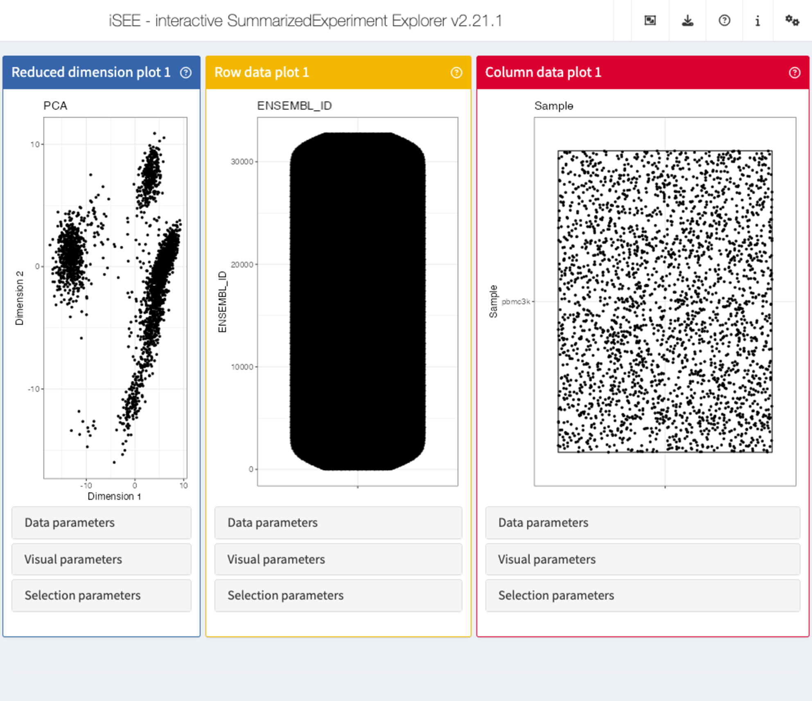
Recipe 2: Data parameters configuration - selecting columns to display
Using the pbmc3k data set, visualize the cell type
assignment against the cluster membership, with the aim to identify the
predominant cell type in each cluster. In this case, since both cell
annotations are categorical, iSEE will generate a so called
Hinton plot.
Hints
-
Column (in this case cell) annotations can be visualized using a
ColumnDataPlotpanel. -
The cluster labels are available in the
Clustercolumn ofcolData(sce). -
The cell type assignments are available in the
labels_finecolumn ofcolData(sce)(more coarse-grained assignments are provided in thelabels_maincolumn). -
iSEEwill automatically determine the plot type depending on the type of selected variables.
Solution (interactively)
-
First open an application with a single
ColumnDataPlotpanel spanning the full application window) -
In the
ColumnDataPlotpanel, click to expand theData parameterscollapsible box. -
Under
Column of interest (Y-axis), select the label column (e.g.,labels_fine). -
Under
X-axis, selectColumn data, and underColumn of interest (X-axis), selectCluster.
app <- iSEE(sce, initial = list(ColumnDataPlot(PanelWidth = 12L)))
shiny::runApp(app)Solution (programmatically)
app <- iSEE(sce, list(
ColumnDataPlot(
PanelWidth = 12L, XAxis = "Column data",
YAxis = "labels_fine", XAxisColumnData = "Cluster"
)
))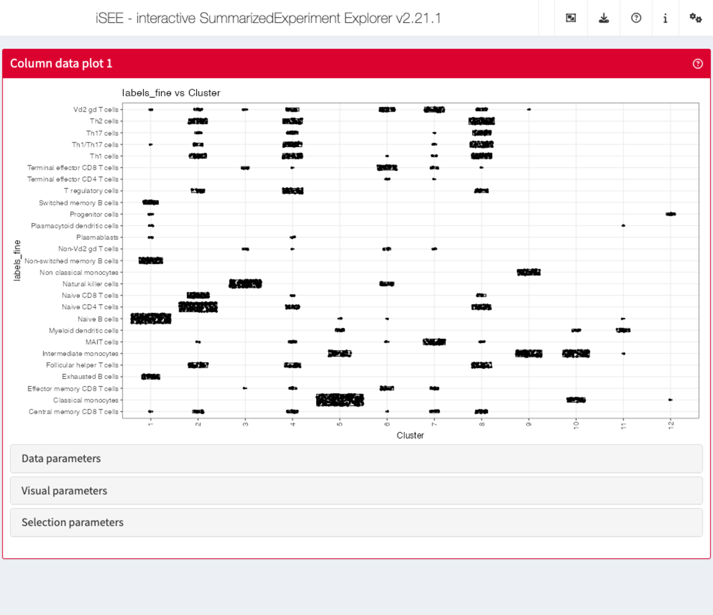
Recipe 3: Data parameters configuration - displaying multiple reduced dimension representations
Using the pbmc3k data set, display both the tSNE and
UMAP representations next to each other.
Hints
-
Reduced dimension representations can be displayed using
ReducedDimensionPlotpanels. -
The reduced dimension representations in the SingleCellExperiment object
can be accessed by name (
reducedDimNames(sce)lists the available representations).
Solution (interactively)
-
First open an application with two
ReducedDimensionPlotpanels, each spanning half the application window) -
In the first
ReducedDimensionPlotpanel, click to expand theData parameterscollapsible box. -
In the
Typeselection box, chooseTSNE. -
In the second
ReducedDimensionPlotpanel, repeat the procedure but instead selectUMAP.
app <- iSEE(sce, initial = list(
ReducedDimensionPlot(PanelWidth = 6L),
ReducedDimensionPlot(PanelWidth = 6L)
))
shiny::runApp(app)Solution (programmatically)
app <- iSEE(sce, initial = list(
ReducedDimensionPlot(PanelWidth = 6L, Type = "TSNE"),
ReducedDimensionPlot(PanelWidth = 6L, Type = "UMAP")
))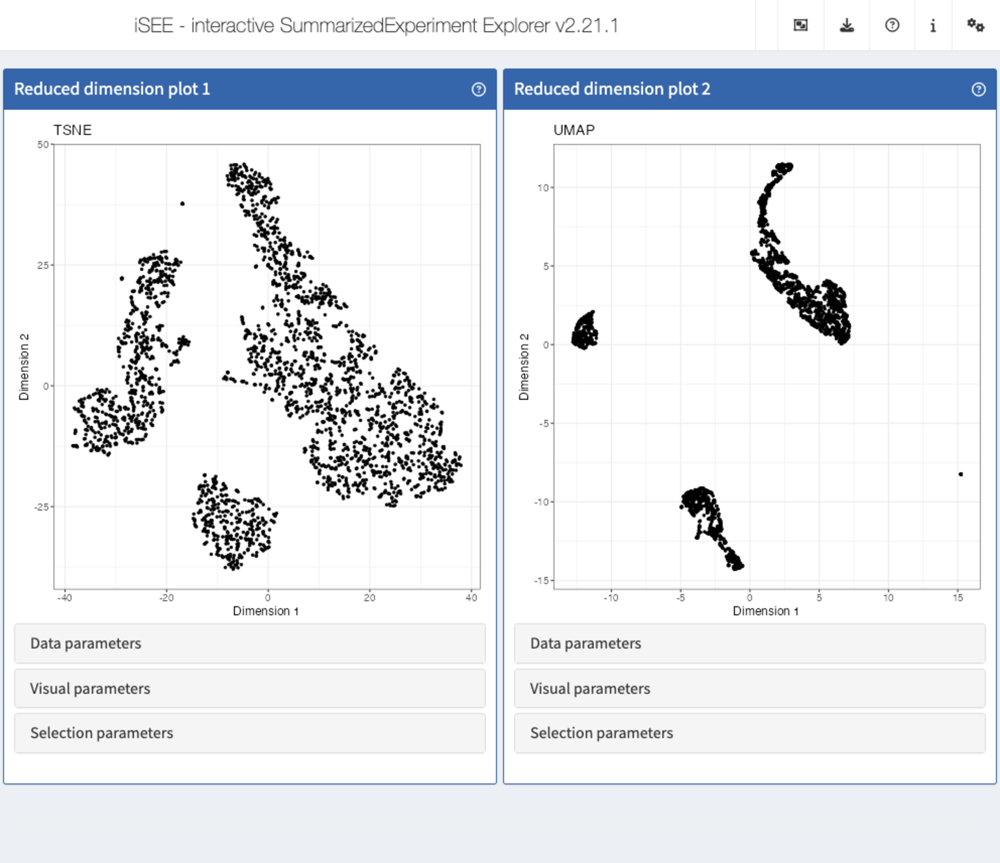
Recipe 4: Data parameters configuration - displaying the expression of a specific gene across clusters
Using the pbmc3k data set, plot the distribution of the
logcount values for the gene CD74 in each of the
clusters.
Hints
-
Gene expression values can be displayed using a
FeatureAssayPlotpanel. - To select a gene, specify the ID provided as row names in the SingleCellExperiment.
Solution (interactively)
-
First open an application with a
FeatureAssayPlotpanel, spanning the full application window) -
In the
FeatureAssayPlotpanel, click to expand theData parameterscollapsible box. -
Under
Y-axis feature, type or selectCD74. -
Under
X-axis, selectColumn data, and underColumn of interest (X-axis), selectCluster.
app <- iSEE(sce, initial = list(FeatureAssayPlot(PanelWidth = 12L)))
shiny::runApp(app)Solution (programmatically)
app <- iSEE(sce, initial = list(
FeatureAssayPlot(
PanelWidth = 12L, XAxis = "Column data",
YAxisFeatureName = "CD74", XAxisColumnData = "Cluster"
)
))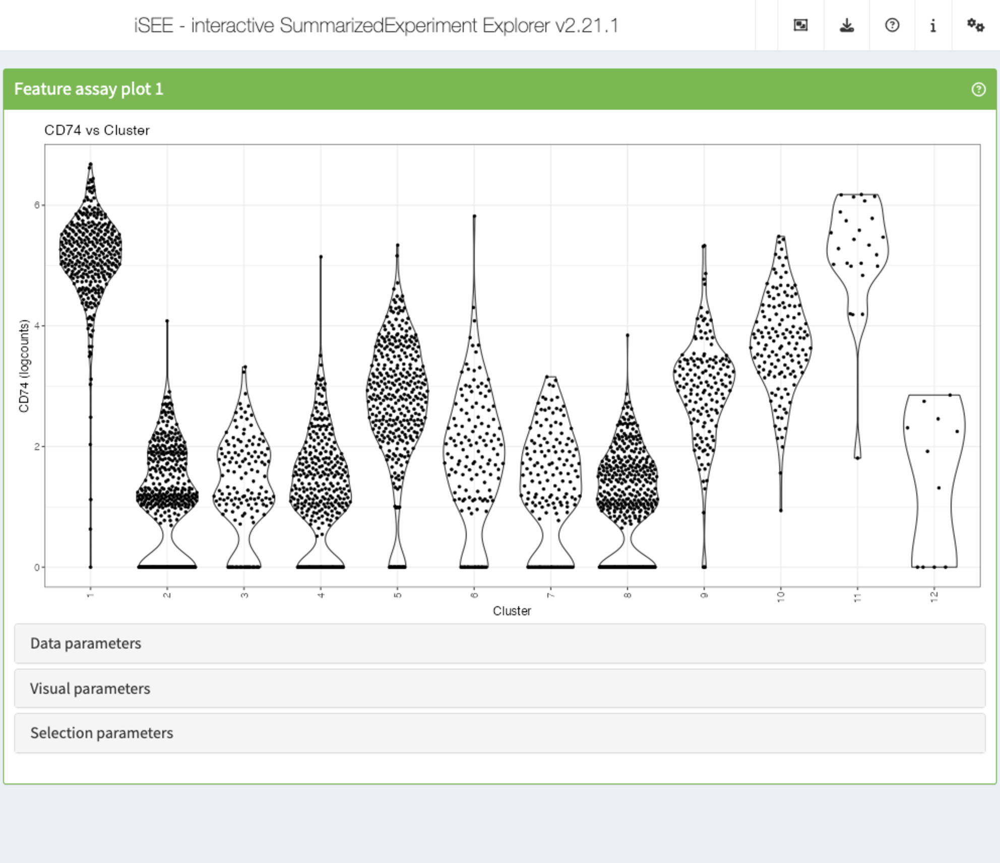
Recipe 5: Visual parameters configuration - coloring reduced dimension representations by cell annotation
Using the pbmc3k data set, display two tSNE
representations next to each other. In the first one, color the cells by
the cluster label. In the second one, color the cells by the log10 of
the total UMI count (log10_total column of
colData(sce)).
Hints
-
Reduced dimension representations can be displayed using
ReducedDimensionPlotpanels. -
The reduced dimension representations in the SingleCellExperiment object
can be accessed by name (
reducedDimNames(sce)lists the available representations). -
The cluster labels are available in the
Clustercolumn ofcolData(sce). -
Point attributes can be accessed in the
Visual parameterscollapsible box. To display or hide the possible options, check the corresponding checkboxes (Color,Shape,Size,Point).
Solution (interactively)
-
First open an application with two
ReducedDimensionPlotpanels, each spanning half the application window) -
In each
ReducedDimensionPlotpanel, click to expand theData parameterscollapsible box and underType, chooseTSNE. -
In the first
ReducedDimensionPlotpanel, click to expand theVisual parameterscollapsible box. -
Make sure that the
Colorcheckbox is ticked. -
Under
Color by, selectColumn data. -
In the dropdown menu that appears, select
Cluster. -
In the second
ReducedDimensionPlotpanel, repeat the procedure but instead selectlog10_total.
app <- iSEE(sce, initial = list(
ReducedDimensionPlot(PanelWidth = 6L),
ReducedDimensionPlot(PanelWidth = 6L)
))
shiny::runApp(app)Solution (programmatically)
app <- iSEE(sce, initial = list(
ReducedDimensionPlot(
PanelWidth = 6L, Type = "TSNE",
ColorBy = "Column data",
ColorByColumnData = "Cluster"
),
ReducedDimensionPlot(
PanelWidth = 6L, Type = "TSNE",
ColorBy = "Column data",
ColorByColumnData = "log10_total"
)
))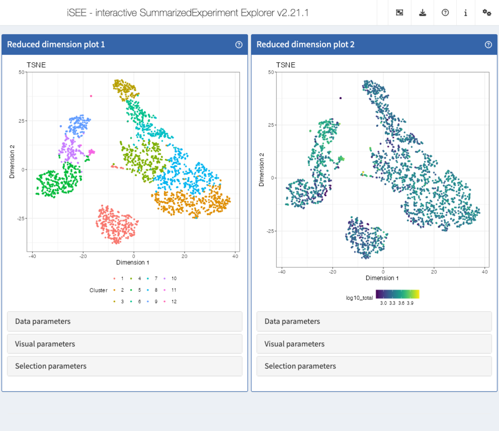
Recipe 6: Visual parameters configuration - coloring reduced dimension representations by gene expression
Using the pbmc3k data set, display two tSNE
representations next to each other. In the first one, color the cells by
the logcounts expression level of CD3D. In the second one,
color the cells by the logcounts expression level of
CD79B.
Hints
-
Reduced dimension representations can be displayed using
ReducedDimensionPlotpanels. -
The reduced dimension representations in the SingleCellExperiment object
can be accessed by name (
reducedDimNames(sce)lists the available representations). - To select a gene, specify the ID provided as row names in the SingleCellExperiment.
-
Point attributes can be accessed in the
Visual parameterscollapsible box. To display or hide the possible options, check the corresponding checkboxes (Color,Shape,Size,Point).
Solution (interactively)
-
First open an application with two
ReducedDimensionPlotpanels, each spanning half the application window) -
In each
ReducedDimensionPlotpanel, click to expand theData parameterscollapsible box and underType, chooseTSNE. -
In the first
ReducedDimensionPlotpanel, click to expand theVisual parameterscollapsible box. -
Make sure that the
Colorcheckbox is ticked. -
Under
Color by, selectFeature name. -
In the dropdown menu that appears, select or type
CD3D. -
In the second
ReducedDimensionPlotpanel, repeat the procedure but instead selectCD79B.
app <- iSEE(sce, initial = list(
ReducedDimensionPlot(PanelWidth = 6L),
ReducedDimensionPlot(PanelWidth = 6L)
))
shiny::runApp(app)Solution (programmatically)
app <- iSEE(sce, initial = list(
ReducedDimensionPlot(
PanelWidth = 6L, Type = "TSNE",
ColorBy = "Feature name",
ColorByFeatureName = "CD3D"
),
ReducedDimensionPlot(
PanelWidth = 6L, Type = "TSNE",
ColorBy = "Feature name",
ColorByFeatureName = "CD79B"
)
))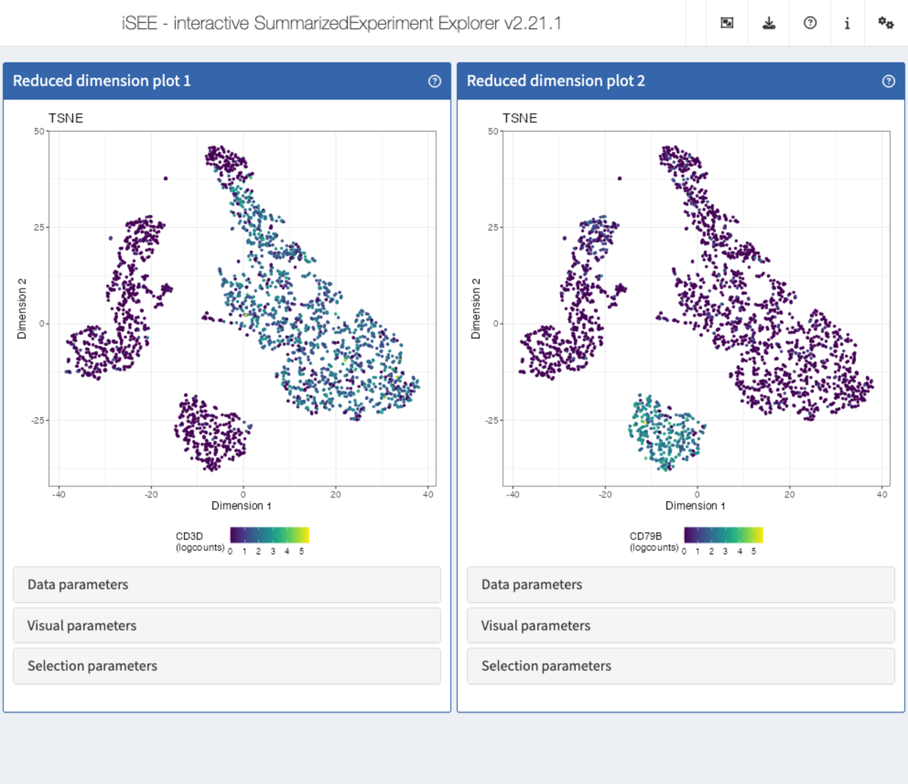
Recipe 7: Visual parameters configuration - changing the size and opacity of points
Using the pbmc3k data set, display two tSNE
representations next to each other. In the first one, set the point size
to 0.5. In the second one, set the point size to 3 and the opacity to
0.2.
Hints
-
Reduced dimension representations can be displayed using
ReducedDimensionPlotpanels. -
The reduced dimension representations in the SingleCellExperiment object
can be accessed by name (
reducedDimNames(sce)lists the available representations). -
Point attributes can be accessed in the
Visual parameterscollapsible box. To display or hide the possible options, check the corresponding checkboxes (Color,Shape,Size,Point).
Solution (interactively)
-
First open an application with two
ReducedDimensionPlotpanels, each spanning half the application window) -
In each
ReducedDimensionPlotpanel, click to expand theData parameterscollapsible box and underType, chooseTSNE. -
In the first
ReducedDimensionPlotpanel, click to expand theVisual parameterscollapsible box. -
Make sure that the
Sizecheckbox is ticked. -
Under
Size by, selectNone. - In the text box underneath, type 0.5.
-
In the second
ReducedDimensionPlotpanel, click to expand theVisual parameterscollapsible box. -
Make sure that the
SizeandPointcheckboxes are ticked. -
Under
Size by, selectNone. - In the text box underneath, type 3.
-
Under
Point opacity, drag the slider to 0.2.
app <- iSEE(sce, initial = list(
ReducedDimensionPlot(PanelWidth = 6L),
ReducedDimensionPlot(PanelWidth = 6L)
))
shiny::runApp(app)Solution (programmatically)
app <- iSEE(sce, initial = list(
ReducedDimensionPlot(
PanelWidth = 6L, Type = "TSNE",
PointSize = 0.5
),
ReducedDimensionPlot(
PanelWidth = 6L, Type = "TSNE",
PointSize = 3, PointAlpha = 0.2
)
))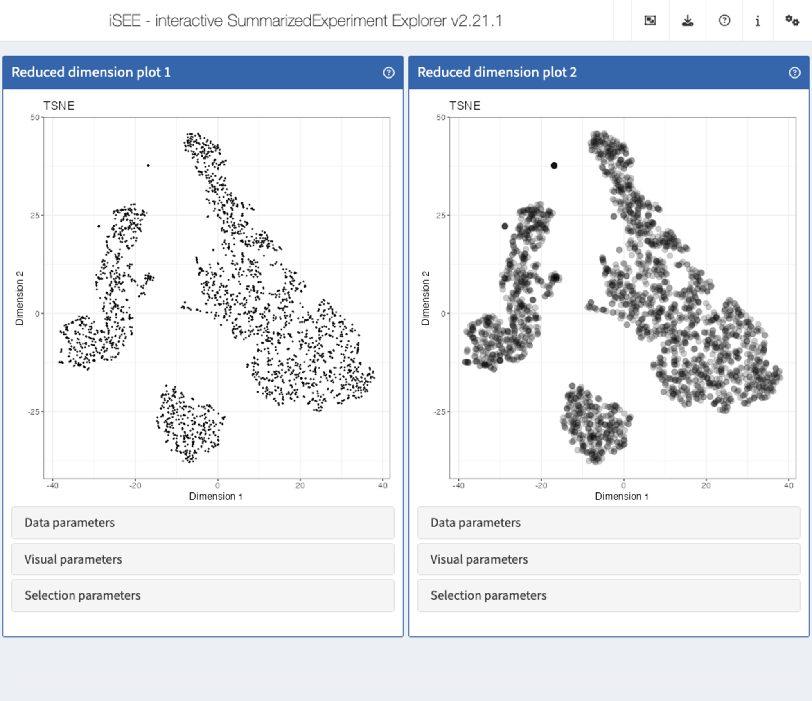
Recipe 8: Selection configuration
Using the pbmc3k data set, display the expression
(logcounts) of CD3D across the assigned clusters, as well
as a tSNE representation colored by the cluster label. Select all cells
with a logcount expression value of CD3D between
(approximately) 0.5 and 4, and highlight these in the tSNE plot by means
of transparency.
Hints
-
Reduced dimension representations can be displayed using
ReducedDimensionPlotpanels. -
The reduced dimension representations in the SingleCellExperiment object
can be accessed by name (
reducedDimNames(sce)lists the available representations). -
Gene expression values can be displayed using a
FeatureAssayPlotpanel. - To select a gene, specify the ID provided as row names in the SingleCellExperiment.
-
Transmission of selections is set up in the
Selection parameterscollapsible box. - Points can be selected by clicking and dragging the mouse to draw a rectangle around them, or by repeatedly clicking to make a lasso (free-form) selection.
Solution (interactively)
-
First open an application with one
FeatureAssayPlotpanel and oneReducedDimensionPlotpanel, each spanning half the application window) -
In the
FeatureAssayPlotpanel, click to expand theData parameterscollapsible box and underY-axis feature, type or selectCD3D. -
Under
X-axis, selectColumn data, and underX-axis column data, selectCluster. -
In the
FeatureAssayPlotpanel, use the mouse to drag a rectangle around all points with a logcount expression value (y-axis) between approximately 0.5 and 4. -
In the
ReducedDimensionPlotpanel, click to expand theData parameterscollapsible box and underType, chooseTSNE. -
In the
ReducedDimensionPlotpanel, further click to expand theVisual parameterscollapsible box, make sure that theColorcheckbox is ticked. UnderColor by, selectColumn data. In the dropdown menu that appears, type or selectCluster. -
In the
ReducedDimensionPlotpanel, click to expand theSelection parameterscollapsible box. -
Under
Receive column selection from, selectFeature assay plot 1. -
Under
Selection effect, make sure thatTransparentis chosen.
app <- iSEE(sce, initial = list(
FeatureAssayPlot(PanelWidth = 6L),
ReducedDimensionPlot(PanelWidth = 6L)
))
shiny::runApp(app)Solution (programmatically)
app <- iSEE(sce, initial = list(
FeatureAssayPlot(
PanelWidth = 6L,
BrushData = list(
xmin = 0, xmax = 15,
ymin = 0.5, ymax = 4,
mapping = list(x = "X", y = "Y", group = "GroupBy"),
direction = "xy",
brushId = "FeatureAssayPlot1_Brush",
outputId = "FeatureAssayPlot1"
),
XAxis = "Column data",
XAxisColumnData = "Cluster", YAxisFeatureName = "CD3D"
),
ReducedDimensionPlot(
PanelWidth = 6L, Type = "TSNE",
ColorBy = "Column data",
ColorByColumnData = "Cluster",
SelectionEffect = "Transparent",
ColumnSelectionSource = "FeatureAssayPlot1"
)
))
#> Warning in .local(.Object, ...): 'SelectionEffect=' is deprecated.
#> Use 'ColumnSelectionRestrict=TRUE' instead.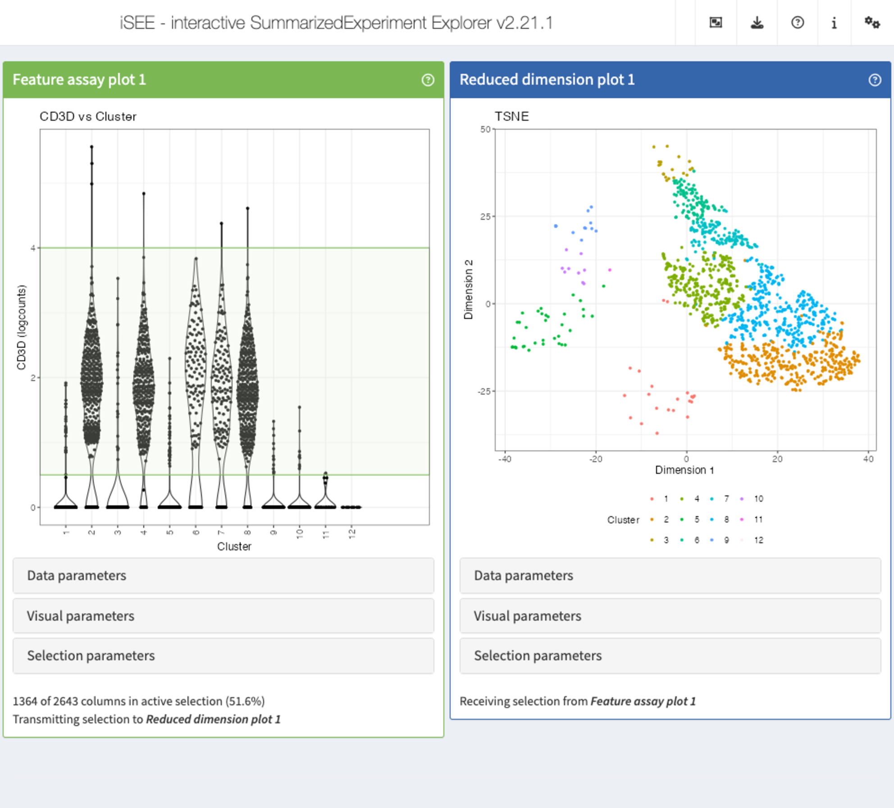
Recipe 9: Verifying the cell type identity of clusters
Using the pbmc3k data set, create a scatter plots
displaying the (logcounts) expression values of CD79A vs
CD74, as well as a Hinton plot of the cluster and cell type
assignment annotations. Select the cells co-expressing
CD79A and CD74 in the scatter plot. Which cell
type/cluster(s) do these correspond to (color these points in the Hinton
plot)?
Hints
-
Gene expression values can be displayed using a
FeatureAssayPlotpanel. - To select a gene, specify the ID provided as row names in the SingleCellExperiment.
-
Column (in this case cell) annotations can be visualized using a
ColumnDataPlotpanel. -
The cluster labels are available in the
Clustercolumn ofcolData(sce). Coarse-grained cell type labels are available in thelabels_maincolumn. -
Transmission of selections is set up in the
Selection parameterscollapsible box. - Points can be selected by clicking and dragging the mouse to draw a rectangle around them, or by repeatedly clicking to make a lasso (free-form) selection.
Solution (interactively)
-
First open an application with one
FeatureAssayPlotpanel and oneColumnDataPlotpanel, each spanning half of the application window) -
In the
FeatureAssayPlotpanel, click to expand theData parameterscollapsible box. -
Under
Y-axis feature, type or selectCD79A. -
Under
X-axis, selectFeature name, and underX-axis feature, type or selectCD74. -
In the
ColumnDataPlotpanel, click to expand theData parameterscollapsible box. -
Under
Column of interest (Y-axis), type or selectlabels_main. -
Under
X-axis, selectColumn data, and underColumn of interest (X-axis), selectCluster. -
In the
FeatureAssayPlotpanel, use the mouse to drag a rectangle around all points co-expressingCD79AandCD74. -
In the
ColumnDataPlotpanel, click to expand theSelection parameterscollapsible box. -
Under
Receive column selection from, selectFeature assay plot 1. -
Under
Selection effect, make sure thatColoris chosen.
app <- iSEE(sce, initial = list(
FeatureAssayPlot(PanelWidth = 6L),
ColumnDataPlot(PanelWidth = 6L)
))
shiny::runApp(app)Solution (programmatically)
app <- iSEE(sce, initial = list(
FeatureAssayPlot(
PanelWidth = 6L, XAxis = "Feature name",
YAxisFeatureName = "CD79A",
XAxisFeatureName = "CD74",
BrushData = list(
xmin = 0.3, xmax = 7,
ymin = 0.3, ymax = 7,
mapping = list(x = "X", y = "Y", colour = "ColorBy"),
direction = "xy", brushId = "FeatureAssayPlot1_Brush",
outputId = "FeatureAssayPlot1"
)
),
ColumnDataPlot(
PanelWidth = 6L, XAxis = "Column data",
YAxis = "labels_main",
XAxisColumnData = "Cluster",
ColumnSelectionSource = "FeatureAssayPlot1",
ColumnSelectionRestrict = FALSE
)
))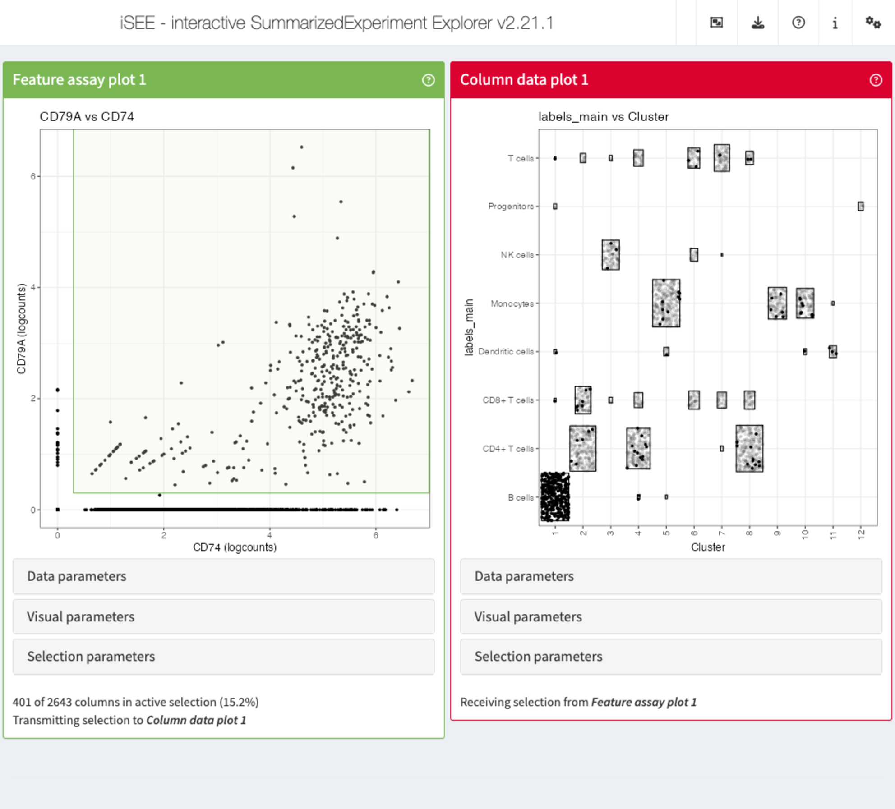
Recipe 10: Using modes from iSEEu
Using the pbmc3k data set, load iSEEu and
use the modeReducedDim mode to open an app displaying all
the reduced dimension representations stored in the SingleCellExperiment
object. Color the representations by the cell type assignment.
Hints
-
The cell type assignments are available in the
labels_finecolumn ofcolData(sce)(more coarse-grained assignments are provided in thelabels_maincolumn). -
The annotation to color by can be specified when calling
iSEEu::modeReducedDim().
Solution (programmatically)
app <- modeReducedDim(sce, colorBy = "labels_main")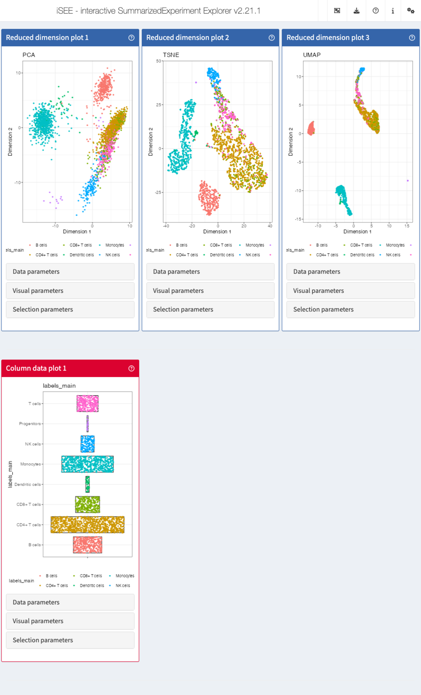
Recipe 11 - Including a tour
Using the pbmc3k data set, display two tSNE
representations next to each other. In the first one, color the cells by
the logcounts expression level of CD3D. In the second one,
color the cells by the logcounts expression level of CD79B.
Also include a small tour that starts with a welcome message, next walks
through the two panels, giving an informative message for each, and
finally ends with a concluding message to the user.
Hints
-
Reduced dimension representations can be displayed using
ReducedDimensionPlotpanels. -
The reduced dimension representations in the SingleCellExperiment object
can be accessed by name (
reducedDimNames(sce)lists the available representations). - To select a gene, specify the ID provided as row names in the SingleCellExperiment.
-
Point attributes can be accessed in the
Visual parameterscollapsible box. To display or hide the possible options, check the corresponding checkboxes (Color,Shape,Size,Point). -
Tours are provided via the
tourargument toiSEE(). -
A tour is defined by a two-column data frame, with columns named
elementandintro. Theelementcolumn contains the names of UI elements, prefixed by a hash sign. More details, including how to find the name of a particular UI elements, can be found in theConfiguring iSEE appsvignette ofiSEE.
Solution (programmatically)
tour <- data.frame(
element = c(
"#Welcome",
"#ReducedDimensionPlot1",
"#ReducedDimensionPlot2",
"#Conclusion"
),
intro = c(
"Welcome to this tour!",
"This is the first reduced dimension plot",
"And here is the second one",
"Thank you for taking this tour!"
),
stringsAsFactors = FALSE
)
app <- iSEE(sce,
initial = list(
ReducedDimensionPlot(
PanelWidth = 6L, Type = "TSNE",
ColorBy = "Feature name",
ColorByFeatureName = "CD3D"
),
ReducedDimensionPlot(
PanelWidth = 6L, Type = "TSNE",
ColorBy = "Feature name",
ColorByFeatureName = "CD79B"
)
),
tour = tour
)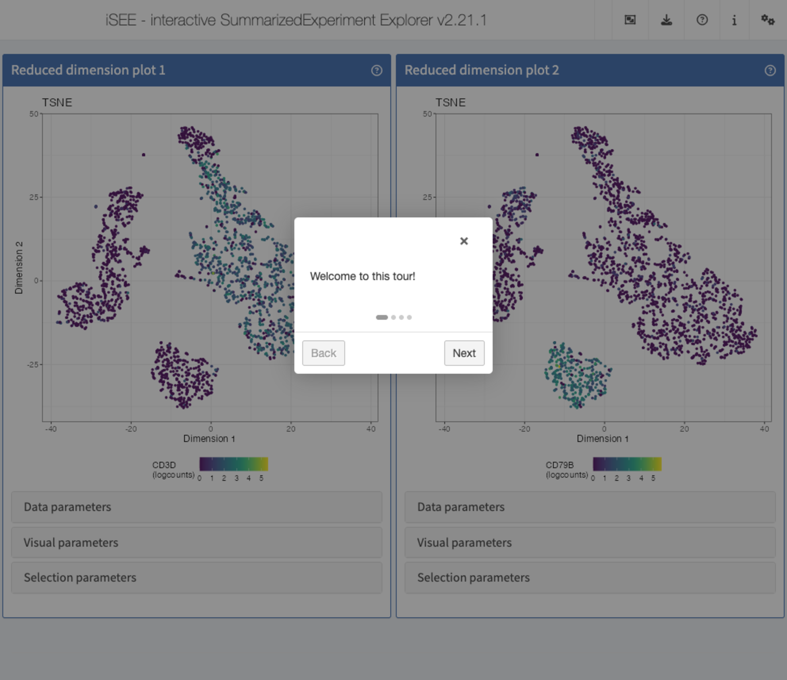
Session info
Session info
sessionInfo()
#> R version 4.5.1 (2025-06-13)
#> Platform: x86_64-pc-linux-gnu
#> Running under: Ubuntu 24.04.2 LTS
#>
#> Matrix products: default
#> BLAS: /usr/lib/x86_64-linux-gnu/openblas-pthread/libblas.so.3
#> LAPACK: /usr/lib/x86_64-linux-gnu/openblas-pthread/libopenblasp-r0.3.26.so; LAPACK version 3.12.0
#>
#> locale:
#> [1] LC_CTYPE=en_US.UTF-8 LC_NUMERIC=C
#> [3] LC_TIME=en_US.UTF-8 LC_COLLATE=en_US.UTF-8
#> [5] LC_MONETARY=en_US.UTF-8 LC_MESSAGES=en_US.UTF-8
#> [7] LC_PAPER=en_US.UTF-8 LC_NAME=C
#> [9] LC_ADDRESS=C LC_TELEPHONE=C
#> [11] LC_MEASUREMENT=en_US.UTF-8 LC_IDENTIFICATION=C
#>
#> time zone: Etc/UTC
#> tzcode source: system (glibc)
#>
#> attached base packages:
#> [1] stats4 stats graphics grDevices utils datasets methods
#> [8] base
#>
#> other attached packages:
#> [1] iSEEu_1.20.0 iSEEhex_1.10.0
#> [3] iSEE_2.20.0 SingleCellExperiment_1.30.1
#> [5] SummarizedExperiment_1.38.1 Biobase_2.68.0
#> [7] GenomicRanges_1.60.0 GenomeInfoDb_1.44.0
#> [9] IRanges_2.42.0 S4Vectors_0.46.0
#> [11] BiocGenerics_0.54.0 generics_0.1.4
#> [13] MatrixGenerics_1.20.0 matrixStats_1.5.0
#> [15] BiocStyle_2.36.0
#>
#> loaded via a namespace (and not attached):
#> [1] rlang_1.1.6 magrittr_2.0.3 shinydashboard_0.7.3
#> [4] clue_0.3-66 GetoptLong_1.0.5 compiler_4.5.1
#> [7] mgcv_1.9-3 png_0.1-8 systemfonts_1.2.3
#> [10] vctrs_0.6.5 pkgconfig_2.0.3 shape_1.4.6.1
#> [13] crayon_1.5.3 fastmap_1.2.0 XVector_0.48.0
#> [16] fontawesome_0.5.3 promises_1.3.3 rmarkdown_2.29
#> [19] UCSC.utils_1.4.0 shinyAce_0.4.4 ragg_1.4.0
#> [22] xfun_0.52 cachem_1.1.0 jsonlite_2.0.0
#> [25] listviewer_4.0.0 later_1.4.2 DelayedArray_0.34.1
#> [28] parallel_4.5.1 cluster_2.1.8.1 R6_2.6.1
#> [31] bslib_0.9.0 RColorBrewer_1.1-3 jquerylib_0.1.4
#> [34] Rcpp_1.1.0 iterators_1.0.14 knitr_1.50
#> [37] httpuv_1.6.16 Matrix_1.7-3 splines_4.5.1
#> [40] igraph_2.1.4 tidyselect_1.2.1 abind_1.4-8
#> [43] yaml_2.3.10 doParallel_1.0.17 codetools_0.2-20
#> [46] miniUI_0.1.2 lattice_0.22-7 tibble_3.3.0
#> [49] shiny_1.11.1 evaluate_1.0.4 desc_1.4.3
#> [52] circlize_0.4.16 pillar_1.11.0 BiocManager_1.30.26
#> [55] DT_0.33 foreach_1.5.2 shinyjs_2.1.0
#> [58] ggplot2_3.5.2 scales_1.4.0 xtable_1.8-4
#> [61] glue_1.8.0 tools_4.5.1 hexbin_1.28.5
#> [64] colourpicker_1.3.0 fs_1.6.6 grid_4.5.1
#> [67] colorspace_2.1-1 nlme_3.1-168 GenomeInfoDbData_1.2.14
#> [70] vipor_0.4.7 cli_3.6.5 textshaping_1.0.1
#> [73] S4Arrays_1.8.1 viridisLite_0.4.2 ComplexHeatmap_2.24.1
#> [76] dplyr_1.1.4 gtable_0.3.6 rintrojs_0.3.4
#> [79] sass_0.4.10 digest_0.6.37 SparseArray_1.8.0
#> [82] ggrepel_0.9.6 rjson_0.2.23 htmlwidgets_1.6.4
#> [85] farver_2.1.2 memoise_2.0.1 htmltools_0.5.8.1
#> [88] pkgdown_2.1.3 lifecycle_1.0.4 httr_1.4.7
#> [91] shinyWidgets_0.9.0 GlobalOptions_0.1.2 mime_0.13